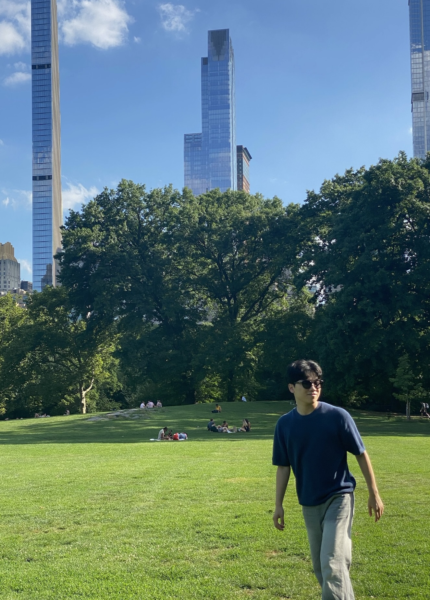

Sihyun Lee
Integrated M.S. - Ph.D Student, GIST AI Graduate School
Gwangju Institute of Science and Technology (GIST)
AI Graduate School
Research Interests
- Image enhancement
- Anomaly Detection
- Image Processing
- Segmentation
- Calcium imaging analysis
Research Topics
- Image Enhancement for Microscopy and Medical Image
- Cell Segmentation using Deep Learning
- Calcium Signal Analysis
- 3D Reconstruction and Segmentation for Ultrasound Image
- Object Detection for Clinical Application
Publications
Journal & Paper
- [1] Machine Learning Based Model Development and Optimization for Predicting Radiation, Sihyun Lee, Journal of Radiation Industry, 2023.
Conference
- [1] Label-Free Detection of Active Cells in Calcium Imaging Using Spatiotemporal Masked Autoencoder, Sihyun Lee, 대한의용생체공학회(KOSOMBE), 2026, Jeju Korea
- [2] Unsupervised Active Cell Detection in Calcium Imaging via Isolation Forest Anomaly Scoring, Sihyun Lee, 대한의용생체공학회(KOSOMBE), 2026, Jeju Korea
- [3] Data Augmentation for Cardiac PET/MRI Fusion Images Using AutoEncoder-Based Reconstruction, Sihyun Lee, Brain & Brain PET, 2025, Seoul Korea
- [4] Autonomous Radiation Source Detection Approach for Mobile Robots Using Reinforcement Learning, Sihyun Lee, Jiyun Kim, IRPA 16, 2024, Orlando USA
- [5] Strategies for Radiation Dose Rate Prediction in Emergency Scenarios, Sihyun Lee, IRPA 16, 2024, Orlando USA
- [6] One-Class SVM Based Anomaly Detection for LSTM-Based Radiation Prediction, Sihyun Lee, ISORD 11, 2023, Seoul Korea
Education
- Integrated M.S. - Ph.D in GIST AI Graduate School
- B.S. in Electronic Engineering(Intelligence of IoT), Chosun University, 2018 - 2024
Personal Gallery


